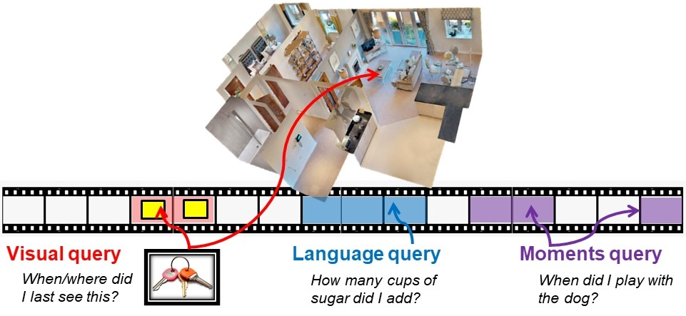

1. 核心摘要
Ego4D 的 Episodic Memory（EM）不是一个新的 memory 网络，而是一套面向第一视角长视频的“历史能否被找回”基准。给定过去视频与一个查询，系统必须定位答案可见或可推断的时间区间；查询可为自然语言、物体图像或高层活动名称。它将 VLA 历史记忆中最容易被忽略的一环外显为可测任务：写入的内容是否能在未来被正确检索，而不只是边界检测是否好看。官方文档汇总约 7.4 万个查询、覆盖约 800 小时视频，并把 NLQ、VQ、MQ 分开定义和评测。
2. 研究动机
2.1 第一视角“记住”不是视频分类
一个可穿戴或机器人助手面对的是连续生活流：用户问“我把钥匙最后放在哪里？”，答案依赖过去某个短暂出现、随后可能离开视野的物体。单帧识别只能回答当前有什么；离线动作分类又预设类别，无法覆盖开放式对象、自由语言问题和长时程回溯。EM 因而把目标设为 在个人历史中定位证据，而不是对整段视频给一个标签。
2.2 三种查询对应三种失败模式
自然语言查询（NLQ）考察文本是否能对齐到正确时间窗口；视觉查询（VQ）考察物体最后一次出现能否被时间和空间共同找回；时刻查询（MQ）则要求找出某高层活动的所有出现区间。它们分别暴露语义匹配、跨时跟踪/重新定位、重复事件枚举的困难。对记忆系统而言，只做其中一种都不足以证明“历史可用”。
3. 任务与协议

原论文 Figure 6（作者 arXiv LaTeX 源码 figures/episodic-queries.jpg）：Episodic Memory 的三类查询。该图为任务/机制图，不是实验结果图。
3.1 输入、输出和时间方向
对任一查询，输入是第一视角视频历史和 query；输出不是一句答案文本，而是答案证据所在的 temporal window。系统可以在离线基准中检索完整历史；因此 EM 本身不强制流式因果性。把它用于 VLA 时，应额外区分：查询发生时可访问哪些已提交 memory，检索是否允许回读原始视频，以及索引何时更新——这些是本基准提出问题、但没有替代实现的系统设计。
3.2 NLQ：语言到证据区间
NLQ 给定自由文本问题，例如“我把什么放进抽屉？”，模型返回一个或多个起止时间。标注者围绕 13 类记忆问题模板写出自然语言，并标注答案可见或可推断的响应窗口。核心度量是 Recall@K 在 tIoU 阈值下的命中率：候选前 K 条中只要有一段与真值 overlap 足够，就算检索到。它同时惩罚语义错配与粗糙的时间定位。
3.3 VQ：最后一次看到的物体
VQ 的 query 是物体裁剪图。系统应在 query frame 之前找到该物体最近一次出现的 response track：既要定位发生时间，又要逐帧给出 2D box；部分数据还要求利用相机位姿、深度和 3D mesh 预测相对当前相机的 3D 位移/位置。原论文 baseline 的管线是：全历史逐帧 region proposal → Siamese 相似度检索 → 在临近 query 的最高峰确定最近出现 → 向前/向后 tracker 恢复连续轨迹。这里“最近一次”使任务不同于常规 object retrieval。
3.4 MQ：活动名称到所有实例
MQ 输入高层 moment 名称，输出视频内所有该活动区间；官方文档说明 taxonomy 有 110 类，来自 narration 的数据驱动、半自动整理。它按 temporal action detection 的 mAP@tIoU 与 recall 协议评测。对 VLA 而言，MQ 最接近“检索所有曾经发生过的子任务/状态”，而 NLQ 更接近语言驱动的单次回忆。
3.5 数据与标注设计
整个 Ego4D 数据集为 3,670 小时、931 位佩戴者、74 个地点、9 个国家的日常第一视角视频；EM 只是其中以“过去”为中心的一组任务。标注包含自由语言、response window/track、活动时间段；VQ 的部分样本附有 Matterport3D 场景扫描。论文和官方文档均强调地理、场景和佩戴者多样性，但这不等于覆盖所有机器人视角、传感器和操作域。
4. 基线与结果
4.1 评测不把三类任务混成单分数
| 子任务 | 原文 baseline 机制 | 主要指标 | 它检验的 memory 能力 |
|---|---|---|---|
| NLQ | 视频—文本时序定位模型（论文比较 VSLNet 等） | R@K, tIoU | 文本能否找对历史证据区间 |
| VQ2D / VQ3D | proposal + Siamese matching + peak + tracker | 时空 track / 3D 定位指标 | 最后一次物体出现的时空可回忆性 |
| MQ | 时序动作检测器 | mAP@tIoU、Recall | 是否检索到所有高层活动实例 |
原文结果的目的主要是建立难度基线，而不是宣布一个统一 SOTA：论文显示 NLQ 的 VSLNet 在 R@1、tIoU=0.3 下仅 5.47%，VQ2D baseline 的 2D success 约 40% 量级，说明在长视频中“针落在哪里”的检索仍远未解决。不同子任务的分数不能互相比较，因为输出结构和指标不同。
4.2 结果对关键事件系统意味着什么
若一个系统只报告 boundary F1，它还没说明被写入的事件能否回答语言问题、重找物体或枚举一类活动。更完整的 VLA 评测至少应同时报告：(1) 固定 memory budget 下关键事件的 Recall@K；(2) 查询到正确事件的 tIoU / 成功率；(3) 写入延迟与检索延迟；(4) 被检索记忆是否改善后续控制。这四项与 EM 的任务族一一呼应，但机器人动作和状态应有自己的标注与成功判据。
5. 优势与局限
优势
第一，它将“记忆”落到可验证的历史定位，而不是抽象 embedding。第二，NLQ/VQ/MQ 覆盖语言、对象、活动三种查询接口。第三，VQ 的 2D/3D 扩展让历史记忆不仅回答“什么时候”，还能回答“在哪里”。第四，长、杂乱的第一视角日常视频比短剪辑更接近真实历史缓存的干扰。
局限
它是数据与评测基准，不给出通用 memory writer、压缩策略或在线提交算法；不能把某个 EM 分数直接解释为 VLA 控制收益。离线历史检索与严格流式系统不同，现实部署还要计算索引更新、隐私、删除和错误写入成本。最后，基准中的人类第一视角、语言叙述与机器人相机/动作状态存在域差异；将它作为评测灵感时应明确新增的状态与接触证据，而非声称可直接迁移。
6. 总结
Ego4D EM 最有价值的贡献是把“过去是否可用”拆成三个可检验问题：语言能否命中证据、物体能否被重定位、活动能否被完整枚举。P0/P1 的方法大多回答“何时形成候选、存什么、怎样保留历史”；P2 则提供末端验收标准——未来查询能否真正从有限历史中找回对任务有用的事件。